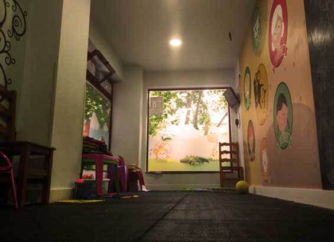

Zona infantil y ludoteca
Ludoteca con monitora, club infantil Los Pinchitos. Para niños de 3 a 12 años, con aforo máximo de 15 niños.
Horario de la ludoteca
- Viernes: de 20:00 a 00:00
- Sábado: de 13:00 a 17:00 y de 20:00 a 00:00
- Domingo: de 13:00 a 17:00
Gratis si el niño ha comido o cenado en el restaurante. 2 € para el resto.
Menú infantil: 13,50 €
Incluye postre y bebida.
- Cinta de lomo con patatas y huevo frito
- Escalope de pollo y huevo frito
- Hamburguesa de ternera con queso y patatas
- Espaguetis boloñesa con queso